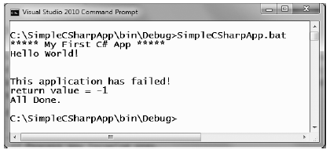
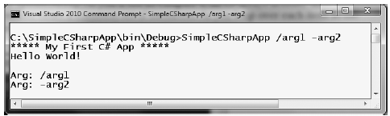
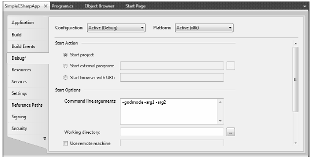

C# demands that all program logic be contained within a type definition (recall from Chapter 1 that type is a general term referring to a member of the set {class, interface, structure, enumeration, delegate}). Unlike many other languages, in C# it is not possible to create global functions or global points of data. Rather, all data members and methods must be contained within a type definition. To get the ball rolling, create a new Console Application project named SimpleCSharpApp. You might agree that the code within the initial Program.cs file is rather uneventful.
using System; using System.Collections.Generic; using System.Linq; using System.Text; namespace SimpleCSharpApp { class Program { static void Main(string[] args) { } } }
Given this, update the Main() method of your Program class with the following code statements:
class Program { static void Main(string[] args) { // Display a simple message to the user. Console.WriteLine("***** My First C# App *****"); Console.WriteLine("Hello World!"); Console.WriteLine(); // Wait for Enter key to be pressed before shutting down. Console.ReadLine(); } }
Here we have a definition for a class type that supports a single method named Main(). By default, Visual Studio 2010 names the class defining Main() Program; however, you are free to change this if you so choose. Every executable C# application (console program, Windows desktop program, or Windows service) must contain a class defining a Main() method, which is used to signify the entry point of the application.
Formally speaking, the class that defines the Main() method is termed the application object. While it is possible for a single executable application to have more than one application object (which can be useful when performing unit tests), you must inform the compiler which Main() method should be used as the entry point via the /main option of the command-line compiler, or via the Startup Object dropdown list box, located under the Application tab of the Visual Studio 2010 project properties editor.
Note that the signature of Main() is adorned with the static keyword. For the time being, simply understand that static members are scoped to the class level (rather than the object level) and can thus be invoked without the need to first create a new class instance.
Note C# is a case-sensitive programming language. Therefore, Main is not the same as main, and Readline is not the same as ReadLine. Be aware that all C# keywords are lowercase (e.g., public, lock, class, dynamic), while namespaces, types, and member names begin (by convention) with an initial capital letter and have capitalized the first letter of any embedded words (e.g., Console.WriteLine, System.Windows.Forms.MessageBox, System.Data.SqlClient). As a rule of thumb, whenever you receive a compiler error regarding "undefined symbols", be sure to check your spelling!
In addition to the static keyword, this Main() method has a single parameter, which happens to be an array of strings (string[] args). Although you are not currently bothering to process this array, this parameter may contain any number of incoming command-line arguments (you'll see how to access them momentarily). Finally, this Main() method has been set up with a void return value, meaning we do not explicitly define a return value using the return keyword before exiting the method scope.
The logic of Program is within Main() itself. Here, you make use of the Console class, which is defined within the System namespace. Among its set of members is the static WriteLine() which, as you might assume, sends a text string and carriage return to the standard output. You also make a call to Console.ReadLine() to ensure the command prompt launched by the Visual Studio 2010 IDE remains visible during a debugging session until you press the Enter key.
By default, Visual Studio 2010 will generate a Main() method that has a void return value and an array of string types as the single input parameter. This is not the only possible form of Main(), however. It is permissible to construct your application's entry point using any of the following signatures (assuming it is contained within a C# class or structure definition):
// int return type, array of strings as the parameter. static int Main(string[] args) { // Must return a value before exiting! return 0; } // No return type, no parameters. static void Main() { } // int return type, no parameters. static int Main() { // Must return a value before exiting! return 0; }
Note The Main() method may also be defined as public as opposed to private, which is assumed if you do not supply a specific access modifier. Visual Studio 2010 automatically defines a program's Main() method as implicitly private. Doing so ensures other applications cannot directly invoke the entry point of another.
Obviously, your choice of how to construct Main() will be based on two questions. First, do you want to return a value to the system when Main() has completed and your program terminates? If so, you need to return an int data type rather than void. Second, do you need to process any user-supplied, command-line parameters? If so, they will be stored in the array of strings. Let's examine all of our options in more detail.
While a vast majority of your Main() methods will return void as the return value, the ability to return an int from Main() keeps C# consistent with other C-based languages. By convention, returning the value 0 indicates the program has terminated successfully, while another value (such as -1) represents an error condition (be aware that the value 0 is automatically returned, even if you construct a Main() method prototyped to return void).
On the Windows operating system, an application's return value is stored within a system environment variable named %ERRORLEVEL%. If you were to create an application that programmatically launches another executable (a topic examined in Chapter 16), you can obtain the value of %ERRORLEVEL% using the static System.Diagnostics.Process.ExitCode property.
Given that an application's return value is passed to the system at the time the application terminates, it is obviously not possible for an application to obtain and display its final error code while running. However, to illustrate how to view this error level upon program termination, begin by updating the Main() method as follows:
// Note we are now returning an int, rather than void. static int Main(string[] args) { // Display a message and wait for Enter key to be pressed. Console.WriteLine("***** My First C# App *****"); Console.WriteLine("Hello World!"); Console.WriteLine(); Console.ReadLine(); // Return an arbitrary error code. return -1; }
Now let's capture the return value of Main() with the help of a batch file. Using Windows Explorer, navigate to the folder containing your compiled application (for example, C:\SimpleCSharpApp\bin\Debug). Add a new text file (named SimpleCSharpApp.bat) to the Debug folder that contains the following instructions (if you have not authored *.bat files before, don't concern yourself with the details; this is a test . . . this is only a test):
@echo off rem A batch file for SimpleCSharpApp.exe rem which captures the app's return value. SimpleCSharpApp @if "%ERRORLEVEL%" == "0" goto success :fail echo This application has failed! echo return value = %ERRORLEVEL% goto end :success echo This application has succeeded! echo return value = %ERRORLEVEL% goto end :end echo All Done.
At this point, open a Visual Studio 2010 command prompt and navigate to the folder containing your executable and new *.bat file. Execute the batch logic by typing its name and pressing the Enter key. You should find the output shown in Figure 3-1, given that your Main() method is returning -1. Had the Main() method returned 0, you would see the message "This application has succeeded!" print to the console.
Figure 3-1 Capturing an application's return value via a batch file
Again, a vast majority (if not all) of your C# applications will use void as the return value from Main(), which, as you recall, implicitly returns the error code of zero. To this end, the Main() methods used in this text (beyond the current example) will indeed return void (and the remaining projects will certainly not need to make use of batch files to capture return codes).
Now that you better understand the return value of the Main() method, let's examine the incoming array of string data. Assume that you now wish to update your application to process any possible commandline parameters. One way to do so is using a C# for loop. (Note that C#'s iteration constructs will be examined in some detail near the end of this chapter.)
static int Main(string[] args) { ... // Process any incoming args. for(int i = 0; i < args.Length; i++) Console.WriteLine("Arg: {0}", args[i]); Console.ReadLine(); return -1; }
Here you are checking to see whether the array of strings contains some number of items using the Length property of System.Array. As you'll see in Chapter 4, all C# arrays actually alias the System.Array class and therefore share a common set of members. As you loop over each item in the array, its value is printed to the console window. Supplying the arguments at the command line is equally simple, as shown in Figure 3-2.
Figure 3-2 Supplying arguments at the command line
As an alternative to the standard for loop, you may iterate over an incoming string array using the C# foreach keyword. Here is some sample usage.
// Notice you have no need to check the size of the array when using "foreach". static int Main(string[] args) { ... // Process any incoming args using foreach. foreach(string arg in args) Console.WriteLine("Arg: {0}", arg); Console.ReadLine(); return -1; }
Finally, you are also able to access command-line arguments using the static GetCommandLineArgs() method of the System.Environment type. The return value of this method is an array of strings. The first index identifies the name of the application itself, while the remaining elements in the array contain the individual command-line arguments. Note that when using this approach, it is no longer necessary to define Main() as taking a string array as the input parameter, although there is no harm in doing so.
static int Main(string[] args) { ... // Get arguments using System.Environment. string[] theArgs = Environment.GetCommandLineArgs(); foreach(string arg in theArgs) Console.WriteLine("Arg: {0}", arg); Console.ReadLine(); return -1; }
Of course, it is up to you to determine which command-line arguments your program will respond to (if any) and how they must be formatted (such as with a - or / prefix). Here we simply passed in a series of options that were printed directly to the command prompt. Assume, however, you were creating a new video game and programmed your application to process an option named -godmode. If the user starts your application with the flag, you know he is, in fact, a cheater and you can take an appropriate course of action.
In the real world, an end user has the option of supplying command-line arguments when starting a program. However, during the development cycle, you may wish to specify possible command-line flags for testing purposes. To do so with Visual Studio 2010, double-click the Properties icon from Solution Explorer and select the Debug tab on the left side. From there, specify values using the command-line arguments text box (see Figure 3-3).
Figure 3-3 Setting command arguments via Visual Studio 2010
Once you have established such command-line arguments, they will automatically be passed to the Main() method when debugging or running your application within the Visual Studio IDE.